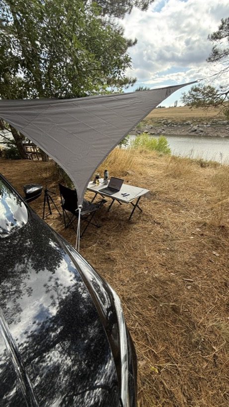
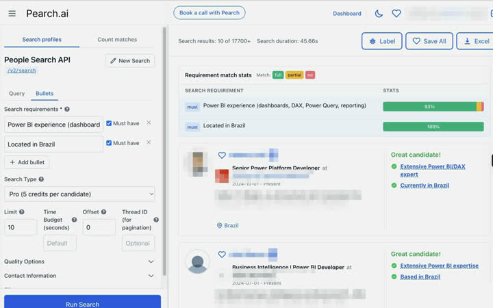
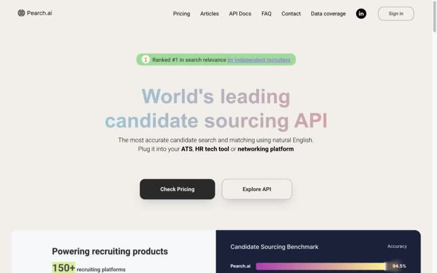
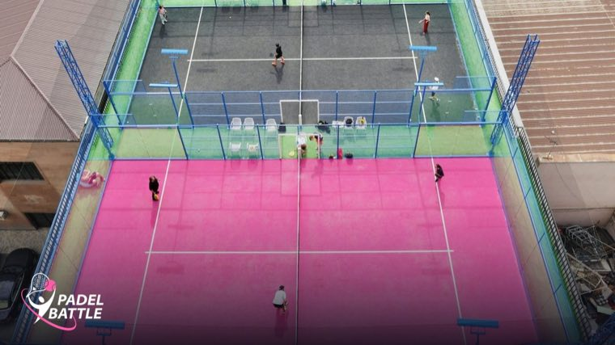

Fourteen years of launching what didn't exist yet — concrete, retail, 3D, networking, now AI search.
I stopped managing people and started managing models.

The office, most weeks it can be.
15products shipped
6industries
$1M+raised
150+B2B clients
40people led, peak
We beat the industry standard blind
Recruiters compared four sourcing engines without knowing which was which. The bar is what each engine costs per seat; the rank is how the humans actually placed it.
Fourteen years nest like this: industries hold products, products hold the pieces somebody had to actually build. Pick a floor.
01
AI and people search
Pearch.AI
livedata science · deep tech · people tech
Founder. An engine that finds the right person from a plain-language description instead of filters. Shipped as an API and an MCP server — so somebody else's ATS suddenly knows how to search people.
The paperarXiv:2504.02463 — blind comparison, my surname in the authors.
Cold outreach for salesThe outbound loop for the sales side.
Site articlesContent that brings developers to the API.
GDPR complianceThe legal perimeter around a profile index.
Onboarding flowA partner's path from key to first query.
API documentation formatMine to own — which is where the technical depth comes from.

People Search API — a plain-language requirement, 10 of 17,700+ matches. Candidate data redacted in the pixels, not by CSS.

pearch.ai — the product the API sits behind.
02
Software for sports clubs
Paddle Club OS
liveportfolio project: Paddle Battle Club
The operating system of a padel club: a site with CRM and intake, a Telegram bot with admins wired in, court-load tracking, a content plan driven by that load, and a corporate offer that tracks who opened it.
Media kitWork in progress.
Ad placementsA list of spots and ideas. Monthly rotating towel sponsors is still at the idea stage.

Paddle Battle Club — the courts the system runs on. Court load is the input the content plan is built from.
03
Networking and events
B4 Networking
shipped→ pivoted into Pearch AI
Co-founder. An app for online networking and a format for meeting people at events. Built the US market from zero: 20+ deep interviews, 1,000+ other research participants. Closed, pivoted into Pearch.
Technical director of the brand agency. Every marketing fit-out of the stores across the country, working straight with the head office in Panama. Adapted international window designs to local manufacturing and ran simultaneous night shifts in different cities.
13 stores in 4 months50+ peoplea direct line to Panama
Yurasha
shippeda brand, next to Under Armour
Drove traffic and made content for the brand. Four products under it.
top-10 sales on the tables
Steel tables cut as vyshyvanka embroideryTop-10 by sales.
Planters from ventilation ductThe same duct as in Gresco — only indoors.
Online course «Wild bouquets»An info product.
T-shirts with a stand we designed ourselvesIn many Russian cities.
Simple Digital
shippedAR / 3D studio
Managing partner. A remote team of design, development, 3D and motion — seven people from four countries. Launched the Hyundai Sonata in the UAE. Digitised 70+ Elikor hood models plus a configurator.
120+ projectsaverage deal ×107 people / 4 countries
WNM Digital
shippedDisney · EA Games · Epic Games
Senior account manager. 18 projects at an average budget of RUB 3–5M, five of them with public figures. Shoots with crews of 50+. One project went wide in the media.
18 projectsRUB 3–5M average budget10M+ reach50+ on set
05
Construction and industrial engineering
Gresco
shippedmy brother is CEO, I held a partner-level seat
From selling industrial ventilation to running construction sites. Two or three sites at once, up to 40 people reporting directly — the most I have ever led.
RUB 350M+ turnover10+ sitesRUB 20–40M per site40 people
Condor-S
shippedinnovation products
Time tracking, face recognition, interactive tablets on five sites, electronic data capture. A rollout of about RUB 100K saved RUB 500K+ of payroll in two months.
RUB 500K in 2 months×5 return in a quarter5 sites
06
Personal products, vibe-coded
Project Radar
livevibe-coded on myself
A product-owner agent that manages me: ranks projects by impact and cost, runs scheduled tasks, swaps my phone wallpaper to match the focus, and reads information back through neuro-interface rules.
10 projectsa daily run
Emozu
livepre-seed · raising
A device for children that warns about a meltdown early — early enough for a parent to act. Roadmap: a paper in nine months.
logo + deck ready
Deeper into this case through the door below.
Nevod
liveused every single day
It parses my screenshot feed and turns findings into rules I then work by. Not a grey prototype — a product I open daily.
pipeline on Fly.io
English Tutor
in progressopen source + paid support
An open repository for language learning with a paid support package on top.
interface and curriculum
Satellite imagery
in progressbuilt for a hackathon
An MVP on satellite data. A recent archive. Looking for who actually needs it before building further.
hunting the first buyer
Frontier map
in progressa future product
It decomposes a task and hunts the leading solution for each part: GitHub open source → products → and if there are none or they are absurdly priced, how to build it yourself and which services you would need. Recursively, until the ideal.
36 nodes · 6 solved / 11 known / 19 open
Installer to founder
Ten rungs. The bar on a row is how many people reported to me that year — it peaks in the middle, then goes to one, on purpose.
pre-2012
construction site
Installer
This is where it started — with my hands.
2012–13
Gresco LLC
Sales manager, industrial ventilation
Equipment and design. Average deal RUB 1–5M.
2013–15
Gresco LLC
Project manager, construction
Two or three sites at once at RUB 20–40M each. Up to 40 people reporting to me.
40 people reporting
2015–18
BartonSpecials / Barton Media Group
Technical director, Under Armour Russia brand agency
13 stores in four months. Straight with the head office in Panama.
50 people reporting
2017
MGSU
Engineer, heat and gas supply and ventilation
Before that — college №26, industrial and civil construction. The engineering degree is why I can read a load.
2018–19
WNM Digital
Senior account manager
Disney, EA Games, Epic Games. 18 projects. A video production team of 30.
30 people reporting
2019–21
Simple Digital
Managing partner, AR / 3D studio
Seven people from four countries. Hyundai Sonata in the UAE. Average deal ×10.
7 people reporting
2021–22
Condor-S LLC
Innovation products manager
Face recognition, time tracking, tablets. RUB 500K saved in two months.
2022 →
B4 Networking LLC · USA
Co-founder, a networking app
The US market from zero. Closed, pivoted into Pearch.
2023 →
Pearch.AI · USA
Founder, people search on AI
A preprint where our engine beat LinkedIn Recruiter blind.
1 person reporting
What I touch with my hands
Split by how deep it actually goes — because "knows Kubernetes" and "ships on Supabase" are not the same sentence.
Services and AI
Claude Code
ChatGPT
image generation
Claude connectors
HubSpot
a custom MCP — my own API bridge on a VPS for a service with no API
Pearch stack, hands-on
Supabase
Postgres
TurboPuffer
RAG
semantic index
optimisation
metrics
papers
Process understanding
I read it and speak the same language as the engineers
Kubernetes
infrastructure
CI
Confident user
I do it with my hands
servers
domains
sites
admin panels
databases through AI
Pre-visualisation
Blender
SketchUp
AR dev
BuildBox
Expertise
growth hacking
product ownership
account management
research
product research
tech research
business development
Languages
Belarusian — native
Russian — native
English — B2
Հայերեն — beginner
Outside the work
the one
Padel
King of all sports.
Squash, Table tennis, Badmintonracket sports are the favourite kind — tennis excepted
Volleyballcompeting as an adult
Runningmarathon, half marathon
Triathlonolympic distance
Road trips and camping are my meditation.
Three ways in
investor / partnership
Three questions, then me
Not a form. Three taps that tell me which conversation we are about to have — and then a direct line.
Answers stay in this tab. Nothing is sent anywhere and nothing is stored — the questions exist to pick the right first sentence, not to collect you.
mentorship / consulting
From $100 an hour
Product, go-to-market, or how to actually ship with AI instead of talking about it. HSE startup mentor; fourteen years of launches to argue from.
Booking and payment run through me in Telegram for now — a checkout page is next, and I would rather have the first conversation than a working payment widget.
direct / no pitch needed
Just write
The shortest route. Telegram is read first; everything else is public and open.